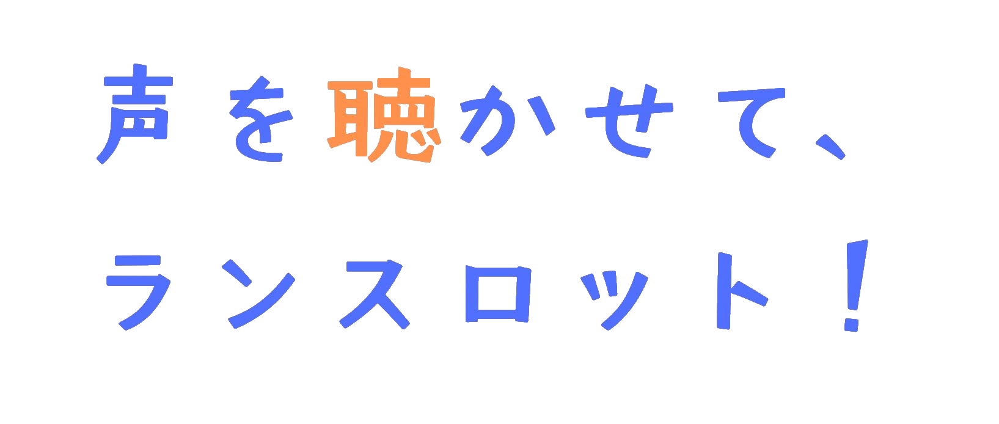

SCENE 01 / 20
LANCELOT
......
VANE
これまでの会話
本ゲームはPCブラウザ環境でのプレイを前提として設計されています。

ある日。散歩中のランスロットとヴェインは、魔物に襲われている親子を目撃する。
とっさに動いたランスロットは背後から魔物が放った呪いに気づけなかった。
ヴェインは身を投げ出してランスロットをかばい、その拍子に呪いを全身に浴びてしまう。
魔物を倒して識者に呪いを解析してもらった２人は、恐ろしい現実を突きつけられた。
「これは孤独の呪いです。最も心を寄せる相手の言葉が理解できなくなる。
結果的に絆を絶たれてしまうのです」
……２人の関係にとって大切な言葉ほど、意味不明な音に変わってしまう呪い。
俺が最も心を寄せる相手……考えなくてもわかる。ランちゃんのことだ。
この呪いが解けない限り、ランちゃんとの絆が絶たれてしまう……？
いやだ。……俺は絶対にあきらめない！このままランちゃんの声がわからないなんていやだ。
ヴェインはランスロットの言葉に耳を傾け、ひとつひとつ記録していくことにした。
いつかまた、お前の言葉を理解できるように。
あの日以来暗い表情のままの幼馴染の笑顔を取り戻して、大好きだよ、と伝えるために。
【ヴェインのノート】
このゲームはヴェイン視点で進行します。
ランスロットの言葉すべてが聞こえないわけではなく、２人の絆にとって重要な部分のみ虫食いのような記号に聞こえます。
会話の文脈やヴェインの観察から虫食いとなっている言葉の意味を考え、ノートに仮説を書き留めてください。
入力した時点では、仮説が正しいかどうかは判定されません。
同じ記号は、同じ意味を持つ言葉を表します。文章によって「待って」「待てば」のように形が変わる場合がありますが、ノートには「待つ」のような基本の形・言い切りの形を記してください。
ノートには、ランスロットがその言葉を発したシーンも記録されます。ノートは何度でも書きなおせます。
【ヴェインの返答】
ノートへ仮説を書いたら「返答へ進む」を押してください。
その時点でヴェインが理解している内容から、返答候補が決まります。
聞き取れなくても、表情や状況を手がかりに会話を続けられます。
正しい返答を当てることが目的ではありません。どう返すかは、あなたが選んでください。
一度返答へ進んだ場面の候補と、その場で選んだ返答は変更できません。
【ヴェインの理解】
正しい仮説を書いただけでは、その言葉の理解が確定したことにはなりません。
会話を重ね、十分な手掛かりが揃ったとき、ヴェイン自身がその意味へ辿り着きます。
一度理解した言葉は、それ以降の会話と過去LOGで日本語として読めるようになります。
【ヴェインの周回】
一度クリアすると、タイトル画面に「つづきから」が現れます。
はじまり・物語の途中・最後の言葉から再開でき、ノートに引き継ぐ理解度も選べます。
途中から始めると、そこまでの選択は保存済みの結末から引き継ぎます。
言葉をどう理解したかと、どのように返答したかが結末に影響します。
エンディングは全てハッピーエンドです。
過去に理解した単語を、最初からノートに引き継ぎますか？
聞き取れない言葉の意味を推測しよう。
思いついた意味を書き留める。